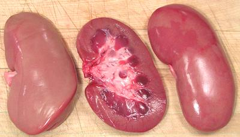

Pork Kidneys

Kidneys are a very popular part of the pig in ethnic cuisines (except, of
course, those that are forbidden pig). The photo specimens were 5 inches
long, 2-1/2 inches across and 1 inch thick, weighing 5 ounces each. If you
must substitute, use lamb kidneys.
More on Cuts of Pork.
Buying:
These can generally be found in ethnic markets
(except those serving primarily Jewish or Muslim communities, of course).
They are particularly common in markets serving Chinese, Southeast Asian
or Southeast European communities. They will all have a slash cut from
one side through to the center, for drainage or inspection, I'm not sure.
Prep:
Most often you will slice them in half horizontally
(as the center one in the photo above) to expose the fat and membranes
for removal. A razor sharp boning knife is good for cutting away fat,
membranes and plumbing. Cut away all white, leaving all dark. If the
kidneys are to be sliced, I've found it easier to cut the white stuff
away after slicing.
Some Asian markets sell them "cleaned". Actually they slice off both
sides and discard the center slice.
While others may use more complex procedures, I find that, after
removing the fat and slicing or cutting the kidneys to the size needed by
the recipe, a simple rinse in several changes of cold water does fine for
cleaning them up.
Cooking:
As with other innards and the kidneys of other
beasts, these are best cooked either very quickly or for a long time.
They will be tough in between.
ap_kidneyz 091115 - www.clovegarden.com
©Andrew Grygus - agryg@clovegaden.com - Photos on this
page not otherwise credited are © cg1 -
Linking to and non-commercial use of this page permitted